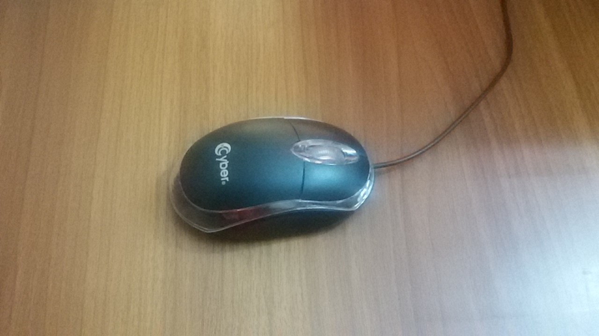
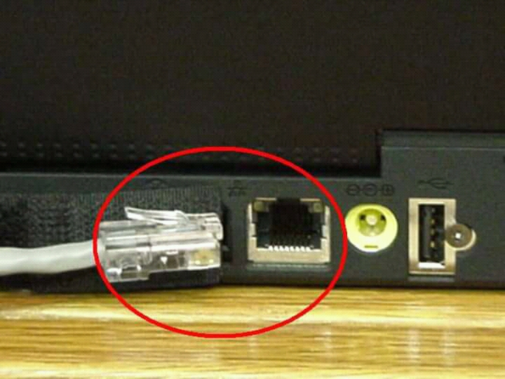

------------------------------------------------------------------------------------------------------------------------------------------------------------
الحاسوب
الحاسوب :هو مجموعة من المعدات والبرمجيات.
المعدات:هو الذي يتكون من وحدات الادخال والاخراج
للتعرف على وحدات الادخال انظر اللى الشكل الاتي:
| الرقم |
الاسم |
الوظيفة |
1 |
الفارة |
النقر |
| 2 |
لوحة المفايتح |
الكتابة |
للتعرف اكثر الى وحدات الادخال انظر الى الصور الاتية:
1.الفارة

2.لوحة المفاتيح

-----------------------------------------------------------------------------------------------------------------------
للتعرف على وحدات الاخراج انظر الى الشكل الاتي:
| الرقم |
الاسم |
الوظيفة |
1. |
الشاشة |
اخراج المعلومات مرئيا |
| 2. |
السماعات |
اخراج المعلومات صوتيا |
| 3. |
الطابعة |
اخراج المعلومات ورقيا |
انواع الطابعات:
- طابعات الليزر
- طابعات نفث الحبر
- الطابعات النقطية
للتعرف على وحدات الاخراج شاهد الفيديو الاتي:
-----------------------------------------------------------------------------------------------------------------------
البرمجيات:هي مجموعة من تطبيقات النظم تتحكم في جهاز الحاسوب.
انواع التطبيقات النظم:
- التطبيقات النظم العامة مثل:windows.
- التطبيقات النظم الخاصة مثل:السجلات.
-----------------------------------------------------------------------------------------------------------------------
بعد الدرس استمع الى الاغاني الاتية:
اخوي الزود
كن انت
-----------------------------------------------------------------------------------------------------------------------
بعد الاستماع الى الاغاني عليك زيارة الفيس بوك لبعض الوقت
لزيارة الفيس بوك عليك ان
تضغط هنا
او على الرمز

-----------------------------------------------------------------------------------------------------------------------
المكونات الداخلية للحاسوب
- وحدة المعالجة المركزية
وظائفها:
- اجراء العمليات الحسابية
- قراءة البرامج وتفسيرها
- التحكم في نقل البيانات عن طريق وحدات الحاسوب
- التحكم في عمل اجزاء الحاسوب
العوامل المؤثرة:
- سرعة المعالج
- عدد الانوية
- ذاكرة الكاش
- الذاكرة الرئيسة
- (ROM) ذاكرة القراءة فقط
- (RAM) ذاكرة الوصول العشوائي
انظر للشكل الاتي للتعرف على الفرق بين ذاكرة:(RAM)و(ROM)
| من حيث |
ذاكرة القراءة فقط |
ذاكرة الوصول العشوائي |
الاحتفاظ بالمعلومات |
تحتفظ بالمعلومات حتى بعد انقطاع التيار الكهربائي |
لا تحتفظ بالمعلومات بعد انقطاع التيار الكهربائي |
| تغير المحتوى |
لا يمكن تغير محتوياتها |
يمكن تغير محتوياتها |
| التخزين |
يخزن عليها من قبل الشركة المصنعة |
تحمل عليها نسخة من نظام التشغيل والملفات التي يعمل عليها المستخدم |
- اللوحة الام
- بطاقة العرض
-----------------------------------------------------------------------------------------------------------------------
وحدات التخزين المساندة:
- القرص الصلب
- الاقراص المدمجة
- القرص الرقمي
- ذاكرة الفلاش
- بطاقات الذاكرة
مزايا ذاكرة الفلاش
- صغيرة الحجم
- سهلة الحمل
- ذات سعة تخزينية كبيرة
- سهلة الاستخدام
- لا تتلف بسهولة
مزايا القرص الصلب
- السرعة في نقل البيانات
- ذات سعة تخزينية كبيرة
انواع الاقراص المدمجة
- القرص المدمج للقراءة فقط
- القرص المدمج القابل للكتابة
- ذات سعة تخزينية كبيرة
- القرص المدمج القابل الاعادة الكتابة والتخزين
-----------------------------------------------------------------------------------------------------------------------
بعد التعرف على وحدات التخزين المساندة علينا التعرف على منافذ جهاز الحاسوب
- (ps/2)منفذ

- المنفذ التسلسلي العام

- المنفذ التسلسلي

- المنفذ المتوازي

- منفذ شاشة الحاسوب

- منفذ الصوت

- منفذ الشبكة

-----------------------------------------------------------------------------------------------------------------------
اما الان سنتعرف على انواع اجهزة الحاسوب
- الحواسيب الصغيرة: يطلق عليها اسم الحواسيب الشخصية لانها تستخدم من قبل شخص واحد فقط
- الحاسوب المكتبي

- الحاسوب المحمول

- الاجهزة اللوحية

- الحواسيب المتوسطة

- الحواسيب الكبيرة

- الحواسيب الفائقة

------------------------------------------------------------------------------------------------------------------------------------------------------------
عمل الطالب:امجد محمد ابو عفونة